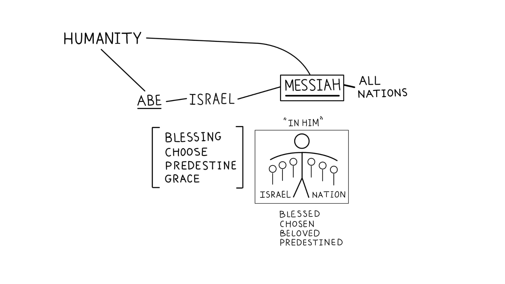

Sessão 10: A Oração de Paulo por um ApocalipseSession 10: Paul’s Prayer for an Apocalypse
Principais Lições
- A identidade de Jesus como o amado escolhido define nossa identidade como humanos: sua morte se torna nossa morte, sua ressurreição nossa ressurreição, e seu governo sobre Céu e Terra nosso verdadeiro chamado como imagens de Deus.Jesus' identity as the beloved chosen one defines our identity as humans: his death becomes our death, his resurrection our resurrection, his rule over Heaven and Earth our true calling as images of God.
- Paulo ora para que Deus dê ao povo um espírito de revelação, para que cresçam em conhecimento e sejam transformados pelo apocalipse de Jesus.Paul prays God would give the people a spirit of revelation, so they grow in knowledge and are transformed by Jesus' apocalypse.
Uma Oração por Revelação e Poder de Ressurreição: Efésios 1:15-23
Paulo louva a Deus pelo relatório de fé e amor dos efésios e ora (1:17-19) para que “o Deus de nosso Senhor Jesus Cristo, o Pai da glória, vos dê espírito de sabedoria e de revelação no conhecimento dele; tendo sido iluminados os olhos do vosso entendimento, para saberdes qual é a esperança do seu chamado, quais as riquezas da glória da sua herança nos santos, e qual a suprema grandeza do seu poder para conosco os que criam”. Esse poder (1:20-23) é o que Deus “operou em Cristo, ressuscitando-o dos mortos e fazendo-o sentar à sua direita nas regiões celestiais, acima de todo governo, autoridade, poder e domínio… e sujeitou todas as coisas debaixo dos seus pés, e para ser cabeça sobre todas as coisas à igreja, que é o seu corpo, a plenitude daquele que a tudo enche em todos”.Paul gives thanks for their faith and love and prays (1:17-19) that "the God of our Lord Jesus Christ, the Father of glory, would give you a spirit of wisdom and revelation in the knowledge of him; the eyes of your heart enlightened, to know the hope of his calling, the riches of his glory, and the surpassing greatness of his power toward us who believe." That power (1:20-23) is what God "worked in Christ, raising him from the dead and seating him at his right hand in the heavenly realms, far above all rule, authority, power and dominion… and placed all things under his feet, and gave him headship over all things to the church, which is his body, the fullness of the one who fills all in all."
Fluxo de Pensamento em 1:15-23
Efésios 1:15: Paulo ouve que novas comunidades de pessoas estão demonstrando lealdade a Jesus, demonstrada por seu amor que se estende além de linhas de fronteira. Efésios 1:16: Paulo se coloca no papel profético de intercessor, estando na interseção do Céu e da Terra e apresentando essas pessoas diante de Deus. Efésios 1:17-19: Paulo ora para que o "Pai da glória" (linguagem de templo) daria sabedoria divina e um apocalipse (capacidade de ver a realidade do Céu na Terra) para que o ser íntimo deles ("olhos do coração") viesse a captar três coisas: (1) o futuro para o qual Deus chamou seu povo, o manifestar da glória divina governando a criação no amor e poder de Deus (1:17); (2) a "herança" futura que é a glória da nova criação governada pelo povo santo de Deus (1:18); (3) o poder gerador de vida de Deus disponível aos que têm lealdade crente (1:19).Ephesians 1:15: Paul hears that new communities of people are showing loyalty to Jesus, demonstrated by their love that extends across boundary lines. Ephesians 1:16: Paul places himself in the prophetic role of intercessor, standing at the intersection of Heaven and Earth and holding these people before God. Ephesians 1:17-19: Paul prays that the "Father of glory" (temple language) would give divine wisdom and an apocalypse (being able to see Heaven's reality on Earth) so that their innermost being ("eyes of the heart") would come to grasp three things: (1) the future to which God has called his people, the manifesting of divine glory by ruling creation in the love and power of God (1:17); (2) the future "inheritance" that is the glory of the new creation ruled by God's holy people (1:18); (3) God's life-creating power being available to those with believing loyalty (1:19).
Efésios 1:20-23: Uma exposição sobre o poder divino da vida de ressurreição. 1:20: A ressurreição e exaltação de Jesus como governante cósmico foi a inauguração do Reino de Deus, a nova criação que agora governa sobre nossa era atual (Sl 110; Dn 7). 1:21-22a: Jesus foi exaltado como o verdadeiro governante divino-humano do cosmos, destronando os "governantes, autoridades, poderes e domínio". O grande templo de Artemis em Éfeso (ver At 19) era o centro de poder espiritual, cultural e político (Sl 8). Paulo está afirmando que Jesus é a autoridade verdadeira a quem todos os governantes dão conta. 1:22b-23: O senhorio cósmico de Jesus está focado num lugar particular no atual solapamento das eras, a ekklesia ("os chamados"), sobre a qual sua autoridade é reconhecida e manifestada em sua adoração e vida corporativa, que é "plenificada" por aquele que "enche todas as coisas".Ephesians 1:20-23: An exposition on the divine power of resurrection life. 1:20: The resurrection and exaltation of Jesus as cosmic ruler was the inauguration of God's Kingdom, the new creation which now rules over our current age (Ps. 110; Dan. 7). 1:21-22a: Jesus was exalted as the true divine-human ruler of the cosmos, dethroning the "rulers, authorities, powers, and dominion." The great temple of Artemis in Ephesus (see Acts 19) was the center of spiritual, cultural, and political power (Ps. 8). Paul is claiming that Jesus is the true authority to which all rulers are accountable. 1:22b-23: Jesus' cosmic lordship is focused on one particular place in the present overlap of the ages, the ekklesia ("the called-out ones"), over which his authority is acknowledged and manifested in their worship and corporate life, which is "filled up" by the one who "fills all things."
Temas-Chave em Efésios 1:15-23
Em Efésios 1:17, Paulo ora para que os crentes experimentem uma "revelação" (gr. ἀποκάλυψις / apokalupsis), um desvelamento para ver o que só pode ser visto com olhos de fé, a exaltação do Messias crucificado e ressuscitado. A descrição de Paulo do entronizamento do Senhor crucificado em Efésios 1:20-21 é modelada segundo múltiplos textos-chave das Escrituras Hebraicas. Efésios 1:20-21, Tradução do Instrutor: "no Messias, tendo-o ressuscitado dentre os mortos e havendo-o assentado à sua direita nas regiões celestiais, acima de todo governo..." Salmo 110:1-2: "Yahweh diz ao meu Senhor: 'Assenta-te à minha direita, até que eu ponha os teus inimigos por escabelo dos teus pés.'"In Ephesians 1:17, Paul prays that believers would experience a "revelation" (Greek: ἀποκάλυψις / apokalupsis), an unveiling to see what can only be seen with eyes of faith, the exaltation of the crucified and risen Messiah. Paul's description of the enthronement of the crucified Lord in Ephesians 1:20-21 is modeled after multiple key texts in the Hebrew Scriptures. Ephesians 1:20-21 Instructor's Translation: "in the Messiah, having raised him from the dead ones and having seated him at his right hand in the heavenly realm, above all rule..." Psalm 110:1-2: "Yahweh says to my Lord: 'Sit at my right hand, until I make your enemies a footstool for your feet.'"

Pergunta de Reflexão
Como a oração de Paulo conecta a ressurreição de Cristo ao poder disponível aos crentes hoje?How does Paul's prayer connect Christ's resurrection to the power available to believers today?